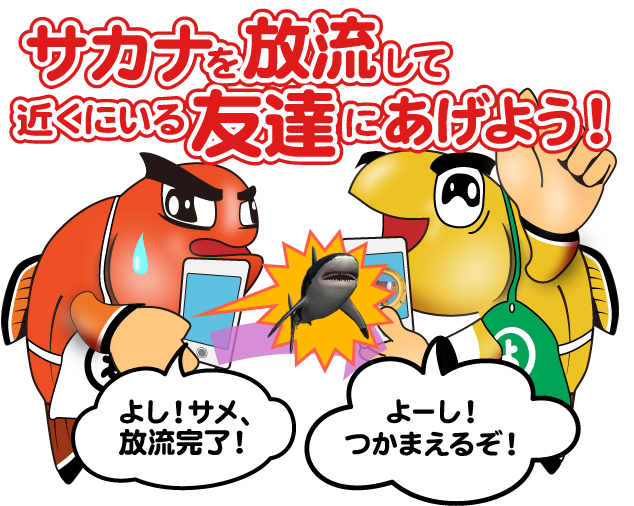
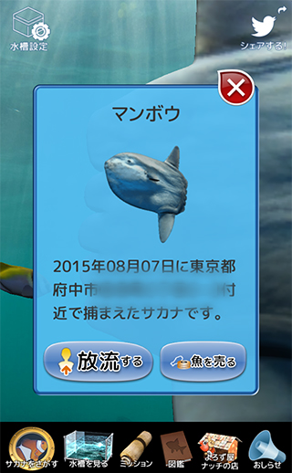

[ NEW! ] 放流機能がつきました！


近くにいる友達にサカナをプレゼントできる放流機能がつきました！
レアなサカナを交換しあってもっと多くのサカナを飼おう。
レアなサカナを交換しあってもっと多くのサカナを飼おう。
- 今一緒にいる友達にサカナタッチを立ち上げてもらって、待機してもらおう
- 水槽のサカナをタッチしたらウインドウが立ち上がるので、「放流する」ボタンをタッチ
- 放流ボタンを押したら一緒にいる友達に「放流したよ！」と伝えてあげる
- 友達は「サカナをさがす」ボタンを押して、放流したサカナを見つけよう！グズグズしてると逃げられちゃうからスピードが求められるぞ！！